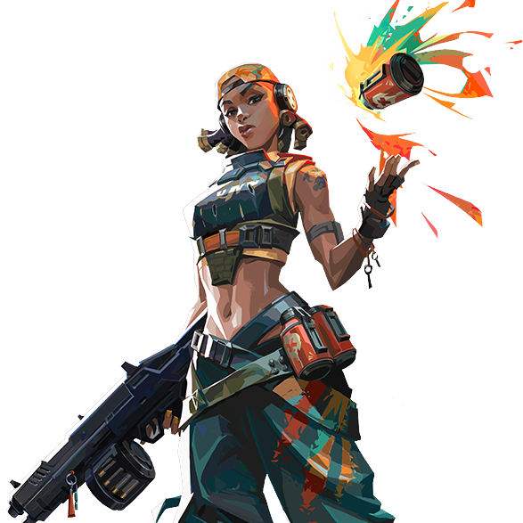

Raze

国籍: ブラジル
ロール: デュエリスト
Razeは爆発物の専門家で、高いダメージを与える能力に優れています。彼女のアビリティは、エリアを制圧し、敵の動きを制限することができます。
公式トレーラー
スキル
| スキル名 | 値段 | 所持上限 | 説明 |
|---|---|---|---|
| ブームボット (C) | 200 | 1個 | 小型のロボットを放ち、敵に接近して爆発する。 |
| ペイントシェル (Q) | 200 | 1個 | 手榴弾を投げ、複数の小さな爆発に分裂して広範囲にダメージを与える。 |
| ブラストパック (E) | 無料 | 2個 | 粘着爆弾を投げ、起爆して範囲内の敵にダメージを与えるとともに、プレイヤーを吹き飛ばすことができる。 |
| ショーストッパー (X) - アルティメット | - | 1個 | ロケットランチャーを構え、一発の強力な爆発を発射する。 |
立ち回りとおすすめマップ
攻めの立ち回り
Razeは高ダメージのアビリティを活用して、サイトへのエントリーをサポートします。
守りの立ち回り
防衛時には爆発物を使って敵の進行を妨害し、エリアを制圧します。
アルティメットの活用
アルティメットを使用することで、敵の集団を一掃し、大きなアドバンテージを得ることができます。
ブームボットの活用
ブームボットは敵の位置を特定するのに役立ちます。狭い通路や敵が隠れている場所に向けて放つことで、敵を追い詰めることができます。
ブラストパックの活用
ブラストパックは、敵にダメージを与えるだけでなく、自分自身を高所に飛ばすためにも使用できます。これにより、予想外の位置からの攻撃が可能になります。